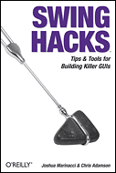

Swing is a powerful toolkit for building desktop applications, but quite often Swing gets a bad reputation for sins of the past. Many times, I've heard, "Swing is slow," "Swing is ugly," and "Swing is too hard." A lot has changed in the almost ten years since Swing was first designed. Chris Adamson and I wrote Swing Hacks to show that you can make fast, attractive, and usable applications quite easily. You just need to know a few tricks.
This article will show you six undocumented features, classes, and properties that let you hack into Swing. I've based the article on hacks that didn't make it into Swing Hacks for one reason or another. Some of them were too short to be full hacks on their own. Some didn't fit nicely into a particular chapter. Some are new things I've learned since publishing the book (technology stands still for no one). Fortunately, the internet provides a way to keep up with the latest developments. As always, please remember that undocumented features are JVM-platform-and-version-dependent. They could disappear in a new version, so use them carefully and always have backup behavior ready.
|
Related Reading Swing Hacks |
Every frame will show up in the Windows task bar with its own icon. If you are
using Windows XP, then the application icons may collapse together, but they are
still there. However, if you subclass java.awt.Window instead of java.awt.Frame,
then your window will not show up in the taskbar or the Alt-Tab hotswitcher.
This is because the window won't be registered as a full "application window"
that the operating system treats with special care. Instead, the window will be
more like a dialog box.
The disadvantage of directly subclassing Window is
that
you won't get any window decorations. The title bar and maximize,
minimize, and
resize buttons will be missing. Even the border will be gone. However,
depending
on your use, this might not be a problem. Toolbar palettes, for
example, are
fine without borders and should properly be hidden from the taskbar.
Also, the recent trend towards mini-application development (Tiger
Dashboard, Yahoo Widgets) suggest that the lack of a title bar won't be
a problem.
Mac OS X has a graphics API called Quartz that makes it very easy to create translucency effects. This API isn't directly accessible from Java, but Apple's developers did provide a really nice feature that uses Quartz. If you make the background of your frame partially transparent, the desktop and other applications will show through. For example, if you had a frame with a few buttons on it, you could call this right before you set the frame:
frame.setBackground(new Color(0, 0, 0, 0));This will make the background of the frame completely transparent, allowing other programs to shine through the gaps between the buttons. This line will make the background be red with 50 percent translucency, so the background will be partially visible and tinted through the frame.
frame.setBackground(new Color(1, 0, 0, 0.5f));The background setting only affects the frame itself, not the components of the frame. If you want those to be transparent, you will need to set their background colors individually. You could also use this effect to create a rounded window by using a PNG image with transparent sections as the background of your main panel. Then the background would shine through the transparent sections, creating the illusion of a shaped window.
Mac OS X introduced a new form of alert: bouncing the dock icon. This is the icon on the bottom of the screen (depending on your setup) that represents your application. You can make this icon bounce when you wish to alert the user. A single bounce represents a simple notification, such as the arrival of new mail. A continuous bounce represents a serious request for the user's attention (a failed disk write would fall into this category). Since this is a Mac-specific feature, there is no standard API for it, and Apple chose not to add it to their official API. However, there is an undocumented class that can do the job.
Apple has wrapped all of their Cocoa APIs with Java classes. These
classes have virtually no documentation, but by referring to the Cocoa
APIs they came from, you can usually figure them out. The com.apple.cocoa.application package contains an NSApplication object that has lots of useful methods. In particular, you want the requestUserAttention() method, which will make the dock icon bounce.
import com.apple.cocoa.application.*;
// ...
public void bounceDock() {
NSApplication app = NSApplication.sharedApplication();
int id = app.requestUserAttention(
NSApplication.UserAttentionRequestCritical);
}
// ...
NSApplication has a static method to get the singleton that represents the application. You can then call the requestUserAttention() method with the constant NSApplication.UserAttentionRequestCritical to make the dock bounce continuously. You can use other constants for other behaviors. The return value can be passed to the cancelUserAttentionRequest() method to cancel the alert once the user has responded. Be sure to add the /System/Library/Java/ directory to your classpath when compiling, so that javac will find the Cocoa wrapper classes.
|
Not to leave Windows lonely, here is an undocumented class that will let you
obtain large desktop icons and other file information. The FileSystemView only
provides access to file icons of a "default" size, which usually means 16 by 16
pixels. If you look at your operating system desktop, however, you may see icons
that are much bigger, with more detail. There is no standardized way of getting
to the larger icons, but on Windows you can use the hidden class called
sun.awt.shell.ShellFolder to retrieve larger (32 by 32) desktop file icons. This
class is only available in Sun's JVM, so it won't work with other vendors, or on
other platforms.
The code below will take a filename and show the file's large icon in a window.
public class LargeIconTest {
public static void main(String[] args) throws Exception {
// Create a File instance of an existing file
File file = new File(args[0]);
// Get metadata and create an icon
sun.awt.shell.ShellFolder sf =
sun.awt.shell.ShellFolder.getShellFolder(file);
Icon icon = new ImageIcon(sf.getIcon(true));
System.out.println("type = " + sf.getFolderType());
// show the icon
JLabel label = new JLabel(icon);
JFrame frame = new JFrame();
frame.getContentPane().add(label);
frame.pack();
frame.show();
}
}
ShellFolder is a wrapper for the metadata of the selected file. From
this object, you can retrieve both the icon and a text description of the file's
type. If you run this on an MP3 file, it might print the string "type =
MPEG Layer 3 Audio" and show a 32 by 32 pixel iTunes MP3 icon.
Sometimes, Swing applications don't provide a way to change a look
and feel at runtime. When using an application like this, you can
override the default look and feel with your own setting from the
command line using the swing.defaultlaf property.
java -Dswing.defaultlaf=com.sun.java.swing.plaf.windows.WindowsLookAndFeel
myapp.MainClassYou can also use this technique to apply a new look and feel that the original developer never thought of.
There are a variety of undocumented properties that control the look of
Metal, Swing's cross-platform look and feel. JTree nodes can have lines
connecting children to their parent, but depending on your current setup, the
lines may or may not be showing. You can control the lines with a client
property called JTree.lineStyle. Add this code after you create
your JTree.
// show the lines in a JTree
tree.putClientProperty("JTree.lineStyle", "Angled");
// hide the lines in a jtree
tree.putClientProperty("JTree.lineStyle", "None");One of the big complaints about Metal is that the menus and labels use bold fonts. With another quick undocumented system property, you can turn that off.
java -Dswing.boldMetal=false myapp.MainClassYou can also turn on the rollover for JToolBar buttons
by using a secret property. A rollover is useful because it gives the
user visual feedback that the mouse cursor is over the right place.
Given the size of the typical toolbar button, this feedback is
essential.
toolbar.putClientProperty("JToolBar.isRollover",Boolean.TRUE);There is a longer (though, by no means comprehensive) list of properties on this wiki page. Swing, and Metal in particular, has lots of undocumented system properties. As you discover them, please add your own comments to the wiki page. Also remember that these are undocumented for a reason, and could easily change or go away in the future. Use them at your own risk.
Swing is a powerful toolkit with lots of hidden features that you can use to bring out the best in your application. This article documents just a few interesting techniques. Swing Hacks from O'Reilly covers another 100 hacks to improve your software. None of the techniques I've shown are required features, but they can add a level of polish that will make your apps stand out from the rest. And in a crowded software marketplace, anything that makes your program better than the competition is a good thing.
In June 2005, O'Reilly Media, Inc., released Swing Hacks.
Sample hacks are available free online.
You can also look at the Table of Contents, the Index, and the full description of the book.
For more information, or to order the book, click here.
Joshua Marinacci is the author of "The Java Sketchbook" column for java.net, covering topics in Java client-side and web development.
Return to ONJava.com.
Copyright © 2005 O'Reilly Media, Inc.